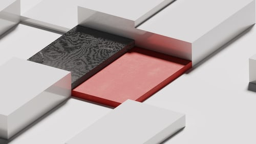

A webhely készítése során egetrengető probléma nem adódott, bár a pozícionálásokkal sokat szenvedtem. Aminek a megvalósításánál problémába ütköztem annak utánna néztem, vagy a tanár segítségét kértem.
Felhasznált színek/mintázatok:

A hátterekhez, gombokhoz és a logóhoz használt képeket az https://unsplash.com-ról töltöttem le.
A logó tervezéséhez Figmát használtam: